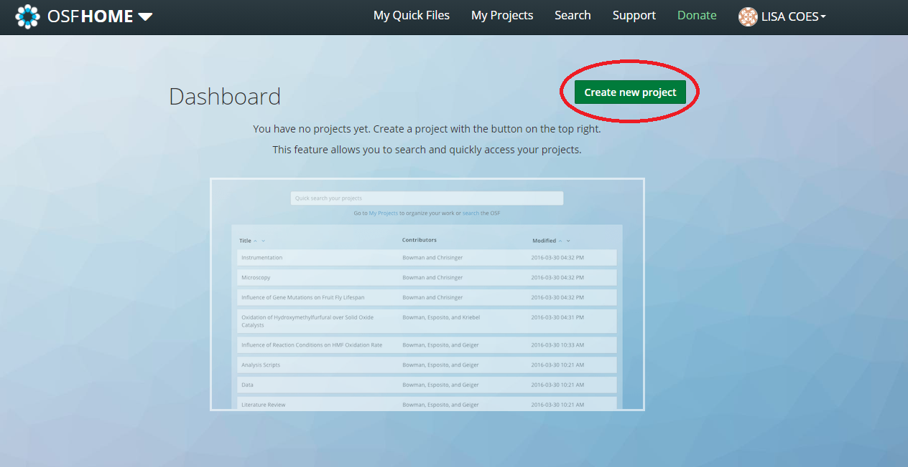
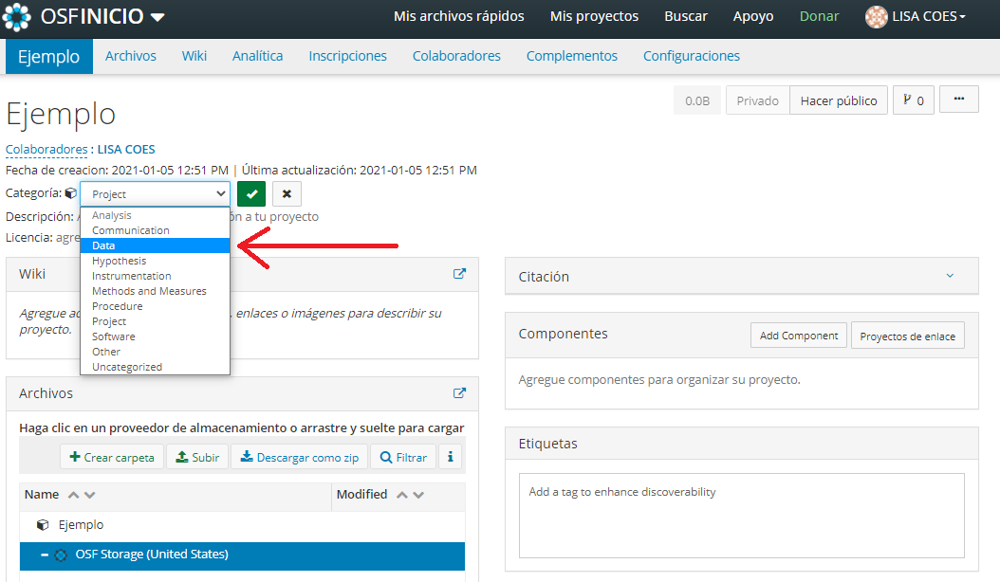
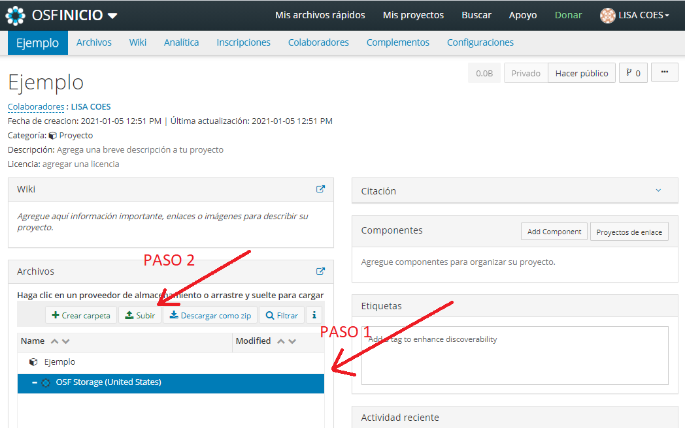
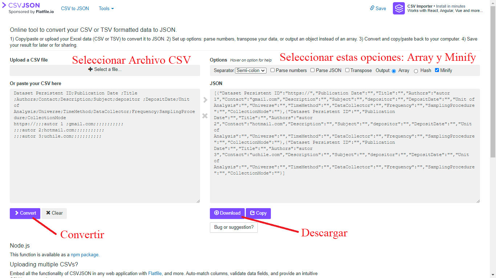

3.3 Publicar
3.3.1 OSF y plataformas para publicar datos
La plataforma web Open Science Framework (OSF) ofrece gratuitamente servicios de infraestructura digital que permite un espacio de registro para las distintas etapas de un proyecto de investigación. Actualmente existen otras plataformas con objetivos similares como Zenovo, Dataverse, GitHub, Mendeley, Figshare, Dryad o ICPSR, y si bien todas son buenas herramientas, se remienda utilizar OSF por diversos motivos señalados por Kryvokhyzha (2019) y un documento informativo de la Librería de Universidades de la Universidad de OKLAHOMA Universitarias (2020). En primer lugar, a diferencia de Dryad, OSF es una plataforma gratuita, con mejor estructura de repositorios y con posibilidades de corregir errores. En segundo lugar, Figshare la capacidad de estructurar los repositorios en distintos componentes, no está optimizado para descargar muchos archivos a la vez y, además es una empresa con fines de lucro. Por su parte OSF, permite estructurar de diversos modos los repositorios, esta optimizado para descargas y es una organización sin fines de lucro que es financiada por el Centro para la Ciencia Abierta cos con recursos para 50 años más. En tercer lugar, a diferencia de Zenovo y GitHub OSF si cuentan con estadísticas de descarga que nos permiten evaluar la visibilidad de los datos. En último lugar, GitHub si bien es una alternativa que ha sido utilizada para este fin, en realidad más que una plataforma para subir datos es una plataforma para crear códigos de forma colaborativa, usualmente de aplicaciones, además no nos permite crear de modo automático un DOI, lo cual es fundamental para cumplir con los principios FAIR.
No obstante, si el equipo investigador lo considera conveniente podría subir sus datos a múltiples plataformas. En esta línea, además de OSF, recomendamos almacenar los datos paralelamente en OpenICPSR puesto que esto permitirá conectar nuestros datos con el buscador de ICPSR, el cual tiene amplia visibilidad dentro del campo de las ciencias sociales a nivel internacional.
Un usuario de esta página puede crear repositorio denominado proyecto, el cual puede contener a su vez componentes que pueden ser investigaciones o datos específicos dentro del proyecto. Se pueden crear más componentes de estos tipos dentro de los componentes del proyecto. Esta estructura permite almacenar conjuntamente trabajos relacionados.
La página promueve que se registren productos de la investigación de las distintas etapas del proceso. En primer lugar, posee un espacio para los “pre-registros” que son un documento en el cual se expone brevemente el diseño de la investigación, las hipótesis y la metodología, lo cual aumenta la rigurosidad de las investigaciones.
Ambas evaluaciones de OSF señalan que un problema es el límite de almacenamiento de solo 5gb por archivo. Este límite ha sido modificado el 5 de noviembre del 2020, agregando un límite de 5gb a los proyectos que estén privados y 50 a los públicos. No obstante, el problema del espacio se puede resolver conectando OSF con otros servicios de almacenamiento con mayor capacidad.
3.3.1.1 Pasos para publicar
- Crear una cuenta en OSF.
Para crear una cuenta en OSF diríjase a este link
- Crear un repositorio de los datos
Para que los datos puedan contar con un identificador y ser fáciles de encontrar , se deben subir en un repositorio, para ello se debe crear uno seleccionando dicha opción en la página de OSF como se señala en la imagen. Indique el nombre del proyecto y establezca la localización (Esta no debe ser necesariamente el lugar donde usted se encuentra)

2.Indicar contenido
Si solo se subirán los datos cambie el cateo gira desde proyecto a datos, como se indica en la siguiente imagen.

- Subir datos y documentos.
Suba los documentos creados en “Documentar”. Para ello debe seleccionar la localización (paso 1) y luego seleccionar “subir” (paso 2). Con ello aparecerán los documentos de su ordenador, y deberá seleccionar y subir los archivos necesarios. También puede crear carpetas para ordenar los documentos.

- Agregar información.
OSF ofrece varios modos para dar más información sobre sus datos. Le sugerimos rellenar las palabras claves del proyecto, haciendo alusión al contenido de las preguntas, el área temática, los sujetos de estudio y lo que considere necesario.
Describa el contenido y la estructura de los documentos en “Wiki”.
También una descripción más breve en descripción.
- Crear licencia.
En base a las recomendaciones revisadas recomendamos utilizar una licencia CCO, como se indica en la imagen. Seleccione add license y se abrirá una lista de opciones. Seleccione la sugerida o la que considere pertinente.
- Crear DOI
Para poder crear un doi es necesario que los datos se encuentren en modo “publico”. Para ello seleccione “Make Public” en la esquina superior derecha. Solo cuando los datos sean públicos OSF ofrecerá la opción de agregar un identificador, para ello solo seleccione “add doi”.
- Almacenar local.
Deje la carpeta con la documentación y los datos en ordenadores que sean de la organización a la que participa. También, puede consultar a la biblioteca de su universidad si es posible que almacenen sus datos para tener una copia de seguridad. Con ello se fomenta que los datos sean perdurables cumpliendo con los criterios de ICSU y con las recomendaciones de la tubería de datos de ICPSR.
3.3.1.2 Crear Metadatos para datos cualitativos o cuantitativos.
Paso 1
Para crear los metadatos de forma muy sencilla se puede utilizar un archivo csv, que se puede editar con el programa Excel o cualquier Hoja de cálculo. A continuación, entregamos un link para descargar un csv con los campos para rellenar los metados, cumpliendo con los campos utilizados por Dataverse Harvard y los “Social Science and Humanities Metadata” de ICPSR.
Para crear los metadatos usted solo debe escribir en las casillas de abajo de las categorías, la respuesta para cada uno de los campos, señalando el identificador, el Titulo de los datos, los autores, entre otros. Es necesario que rellene los campos en inglés. Con una traducción simple de Google Traductor o Deepl es suficiente.
Para descargar el archivo csv editable en Excel seleccione Descargar Metadata.cvs. Si no le ofrece directamente abrirlo con Excel, puede apretar click derecho sobre el archivo, seleccionar “Abrir con”, luego Excel, si no aparece seleccionamos “Elegir otra aplicación”, “Más aplicaciones” y luego Excel.
A continuación, le presentamos una tabla con cada uno de los campos que debe llenar y con que debe rellenarlos. Después de agregar la información a los metadatos solo guarde el documento desde Excel, y este se guardará automáticamente en csv delimitado por Semi-coma (;) en codificación UTF-8 (Que permite incorporar comas a los metadatos)
Cabe destacar que para el primer campo correspondiente al Identificador antes del código entregado por OSF, debe estar escrito https://doi.org/ como se muestra en el documento descargado. Esto es para cumplir con los estándares FAIR.
Paso 2
Después de haber creado el documento csv con nuestra información solo debemos seleccionar al siguiente link e ir al sitio web: csvjson.com. En este sitio tenemos que apretar Select a file… y buscar el documento csv creado. Posteriormente, se debe señalar output: “Array” y “Minify”, como se señala en la imagen. Con estas opciones apretamos el botón morado >Convert bajo el cuadrado que posee nuestro documento CSV. Cuando esté listo apretamos el botón Download, como se señala en la Imagen. El documento se descargará con el nombre csvjson, debe cambiarlo a metadata.

Paso 3
Finalmente debemos agregar los archivos csv y json al repositorio, recuerde cambiar el nombre del documento a metadata.
3.3.1.2.1 Mejorar metadatos del Libro de códigos (Para datos cuantitativos)
Para el libro de códigos recomendamos utilizar Codebook Generator. En esta plataforma basta con seleccionar una base de datos, apretar generate codebook y descargar para tener un libro de códigos. Sugerimos, además, para seguir los estándares FAIR cambiar la línea de código 51 por las líneas de código señaladas más adelante, antes de generar el libro de códigos. En estos códigos usted debe agregar la información de los metadatos entre las "" usted puede agregar el nombre de su base de datos, el doi, los autores y las palabras clave. Recuerde que el DOI se creara después de publicada la base por ello recomendamos hacer el libro de códigos después de crear el repositorio en OSF, además antes del DOI hay que anteponer https://doi.org/ para que funcione como un link a nuestro proyecto.
Para obtener como citar su documento busque en su repositorio de OSF “citation” y despliegue la ventana, le aparecerán citas en distintos formatos.
metadata(codebook_data)$name <- "Nombre de su base de datos"
metadata(codebook_data)$doi <- "https://doi.org/10.17605/OSF.IO/VC8YU"
metadata(codebook_data)$keywords <- c("Palabra clave 1", "Palabra clave 2","Palabra clave 3","Palabra clave 4" )
metadata(codebook_data)$authors <- c("Autor 1", "Autor 2","Autor 3")
metadata(codebook_data)$cite <- "Meneses, F. J. (2020, December 2). Bases. https://doi.org/10.17605/OSF.IO/VC8YU"3.3.1.2.2 Mejorar metadatos para documentos PDF de transcripción (Para datos Cualitativos)
Para mejorar los metadatos podemos incrustar más metadatos en los documentos PDF, en las transcripciones, por ejemplo, de modo muy sencillo. Para ello debemos ir a la página Sejda.com. En esta página basta con apretar Upload PDF file, para que nos entregue un conjunto de casillas para rellenar con información sobre la fecha de producción y los autores del documento. Lamentablemente no ofrece un espacio para incorporar el DOI creado en OSF, no obstante, aconsejo incorporar el DOI ya sea en autor, creador o productor. Al pegar el DOI en la casilla debe anteponer https://doi.org/ para que el DOI funcione como un enlace a nuestro proyecto en OSF. Después de descargar el documento con los metadatos modificados, se puede volver a repetir el proceso para cerciorarse de que los metadatos han cambiado.
References
Kryvokhyzha, Dmytro. 2019. “The Best Free Research Data Repository.” Dmytro Kryvokhyzha - Bioinformatics & Genomics Scientist. https://evodify.com/free-research-repository/.
Universitarias, Bibliotecas. 2020. “Make Your Data Discoverable | University of Oklahoma Libraries.” https://libraries.ou.edu/content/make-your-data-discoverable.